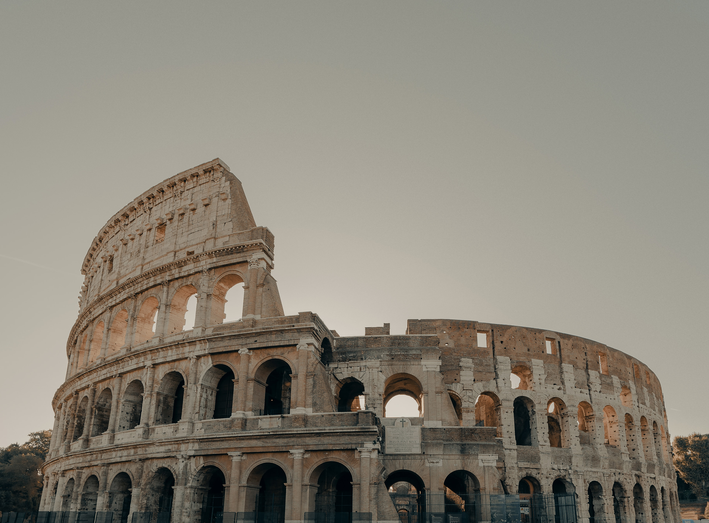

Colosseum History

On the east of the Roman Forum, the enormous stone amphitheater known as the Colosseum was built around A.D. 70-72 by Emperor Vespasian of the Flavian dynasty as a gift to the Roman citizens. In A.D. 80, Vespasian’s son Titus opened the Colosseum; formally referred to as the Flavian Amphitheater; with 100 days of games, consisting of gladiatorial combats and wild animal fights. After 4 centuries of active usage, the magnificent arena fell into disregard, and up until the 18th century it was utilized as a source of building elements. Though two-thirds of the original Colosseum has been damaged with time, the amphitheater stays a popular tourist location, in addition to a renowned symbol of Rome and its long, troubled history.
Construction was begun by Vespasian and finished by Titus in A.D. 80 with a solemn inauguration lasting all of one hundred days, which is recorded in ancient chronicles. As a gigantic monument to the gladiatorial spectacles that were extremely popular in the Roman world and directed to praising the generosity of the emperors who had conceived it, the Colosseum was without doubt the Flavians’ most ambitious and demagogic political project. In A.D. 64, a terrible fire destroyed Rome. It burned for nine days until it was finally put out. When the Emperor Nero rebuilt the city, he saved a huge area in the center for a new palace. In the entrance of the Golden House, there was a huge statue, of the emperor himself. It was 37 m high and made of bronze. Outside, Nero had a private park with a lake.
Romans hated the Golden House. Nero was known to have murdered his mother, his wife, and his stepbrother. People were suspicious of him starting the blaze. Nero had almost moved into his new home when he learned of widespread uprisings against his rule. The generals commanding Rome’s greatest armies refused to obey Nero’s orders, saying that they would make better emperors themselves. Abandoned by everyone, Nero killed himself. 18 months of war came out after Nero's death as rival generals fought each other for power. Respectively, three men became emperor in Rome, (Galba , Otho, and Vitellius). By the end of A.D. 69, Vespasian became the new emperor, an old general. In the previous 18 months, four Roman emperors had died. Vespasian did not want to be the fifth dead emperor. So, he wanted to be loved by the people of Rome. Vespasian decided to pull down most of Nero's hated Golden House and to open the grounds as a public garden. He also planned to build a huge amphitheater for the public show. Emperor Vespasian died before the construction was finished. Colosseum was opened in A.D. 80 by his son, Emperor Titus. The Romans called their new amphitheater the Flavian Amphitheater, after the family name of Vespasian and Titus. The later name Roman Colosseum comes from the Colossus (Colyseus), the big statue of Nero that stood next to it. It was such an impressive statue that it had not been destroyed by Vespasian, he renamed it as a statue of the sun god. Under the Empire, the Colosseum was restored several times after fires and earthquakes. There is documentary evidence of work ordered by Antoninus Pius, Heliogabalus, and — after a disastrous fire in A.D. 217 — Alexander Severus. Restoration work was also carried out and commemorated by epigraphs subsequent to the earthquake of A.D. 443. After A.D. 523 there is no record of spectacles. A period of decay and ruin began which in a short time transformed the monument into a quarry of building materials.
The Colosseum was a substantial building. It covered over 6 acres of land, lengthwise the Colosseum was 620 feet long, 513 feet large, and also over 160 feet high. To empty and also load such a big structure really promptly would be challenging. The engineers created a system of arcs and also stairs inside the structure. With over 80 archways with several collections of stairways causing the seats it would quickly be emptied in much less compared to 10 mins. Below the seats, there was a maze of staircases as well as passages. The stairs from the initial degree climbed to the 3rd and also 2nd degrees. People in the streets would certainly go into the structure via among seventy 6 arcs. The various other 4 were reserved for the emperor as well as his family members to make use of. This created the Colosseum to have an extremely special layout.
The theater was outstanding also from the outdoors with substantial open games on each of the first 3 floor coverings offering statue-filled arcs. The very first flooring brought Doric columns, the 2nd Ionic, and the 3rd level Corinthian. The leading flooring had Corinthian pilasters and little rectangle-shaped windows. There were no less than eighty entryways, seventy-six of these were numbered and tickets have cost each. 2 entryways were utilized for the gladiators, among which was called the Porta Libitina (the Roman goddess of death) and was the door through which the dead were eliminated from the arena. The other door was the Porta Sanivivaria through which victors and those enabled to endure the contests left the arena. The last 2 doors were reserved specifically for the Emperor’s usage.
Theatre needs to have been much more excellent when the 3 tiers of seats were filled with all areas of the population. Surrounding the arena was a broad marble balcony safeguarded by a wall within which were the distinguished ring-side seats or boxes from where the Emperor and other dignitaries would enjoy the occasions. Beyond this location, marble seats were divided into zones: those for richer civilians, middle-class people, servants and immigrants and lastly wood seats and standing space in the flat-roofed pillars on the leading tier reserved for females and the poor. On top of this roofing platform sailors were utilized to handle the big awning which safeguarded the viewers from rain or supplied shade on hot days. The various levels of seats were accessed through broad staircases with each landing and seat being numbered. The overall capability for the Colosseum was roughly 45,000 seated and 5,000 standing viewers. Among the earliest representations of the Colosseum appeared on the coins of Titus and reveals 3 tiers, statues in the upper external arches, and the big column water fountain which stood close by.
The scene of all the action; the sanded arena flooring; was likewise captivating. It was typically landscaped with rocks and trees to look like unique places throughout the staging of wild animal hunts. There were likewise innovative underground lifting systems that enabled the unexpected intro of wild animals into the procedures. On some celebrations, significantly the opening series of programs, the arena was flooded in order to host mock marine fights. Under the arena flooring was a labyrinth of little compartment spaces, passages, and animal pens.
The spectacles that took place in the Colosseum were basically of two kinds: gladiatorial fights (called munera in ancient times) and mock hunts, of ferocious animals (the so-called venationes).
In this way the Roman public spent whole days at the Colosseum, in hot weather and cold, watching spectacles that the modern sensibility considers atrocious and revolting. The magistrates vied with each other to organize events of this type and so ingratiate themselves with the people; the emperors themselves offered highly spectacular games and the strongest gladiators who proved most successful were favorites with the public, as well as with the Roman matrons.
An efficacious expression of the ideals of strength and valor held by the nobility, the games belonged to the collective rituals of the aristocratic class of the Italic world. This explains the form they originally took in Rome: that of a private exhibition of power and family prestige. The term used to refer to them was munera, that is, spectacles offered to the community. The first ones were organized on the occasion of the funeral of Brutus Pera in 264 B.C. by the latter’s sons. But their number grew so rapidly in a few years that a special law was required (the lex Tullia deambitu of 61 B.C.) to curb the excesses caused by the fact that they had become easy instruments of political and electoral propaganda.
In Rome the gladiatorial games long remained occasional events, though frequent, and it was only at a relatively late date that the need was felt for a building that would enable them to be presented: hence the Colosseum. But who were the protagonists of these games? Normally they were slaves, prisoners of war, prisoners sentenced to death, all people whose life counted for little in those times. And yet we know that free men also chose to become professional gladiators, certainly induced by the reputation it would give them and the rewards: the winners were awarded the palm and the crown of victory but also prizes in money.
During the armed duels, which lasted until one of the two was defeated, the gladiators were required to give their utmost. They were urged on and goaded by incitatores, the arena personnel who followed the fights close by. If one of the two did not show sufficient initiative he could be punished with death.
Gladiators unable to continue fighting and defeated ones (who otherwise would have been finished off) were allowed to ask for mercy (missio) from the editor or, more often, from the spectators.
Also, the venationes originated as shows presented for the people as displays of power and prestige: significantly the first time when exotic animals were presented at Rome was in 186 BC, to celebrate the triumph in the East of the general Fulvius Nobilior. Clearly fierce animals like lions and leopards made these spectacles even more fascinating in the eyes of the Romans; but the stunning scenery (with natural settings, mythological panoramas, etc.) in which the hunting scenes were set in the arena always aroused new excitement.
As time went by, the excitement over exotic animals grew and the triumphers began to vie with one another in exhibiting rarer and rarer ones, such as the rhinoceros brought back by Pompey in 55 B.C. and the giraffe that Caesar provided for the games in 46 B.C.
The animals had no chance in these contests and were frequently killed at a distance using spears or arrows. There threatened animals such as tigers, lions, elephants, bears, hippopotamuses, leopards, and bulls but there were also occasions with defenseless animals such as deer, ostriches, giraffes, and even whales. Hundreds, in some cases even countless animals, were butchered in a single day’s event and frequently brutality was intentional in order to accomplish crudeliter, the proper amount of ruthlessness.
In late antiquity, for economic and religious reasons, the shows in the amphitheater became steadily less lavish and bloody. Together with the decay of the structures of the colosseum, there was also a slowly growing indifference to these entertainments, until an imperial decree in 438 abolished the gladiatorial games and, almost a century later, those involving animals.
Between the beginning of the gladiatorial games in 264 B.C., and their final banning in A.O. 404 (though in fact there were later games) thousands, including many Christian martyrs, lost their lives in the Colosseum.
The Colosseum saw some 4 centuries of active use until the battles of the Western Roman Empire and the steady change in public tastes put an end to gladiatorial combats and other big public home entertainments by the 6th century A.D. Even by that time, the arena had suffered damage due to natural phenomena such as lightning and earthquakes. In the centuries to come, the Colosseum was abandoned totally and used as a quarry for numerous structure jobs, consisting of the cathedrals of St. Peter and St. John Lateran, the Palazzo Venezia and defense strongholds along the Tiber River. Starting in the 18th century, however, various popes looked to save the arena as a sacred Christian site, though it is, in reality, unsure whether early Christian martyrs met their fate in the Colosseum, as has actually been hypothesized.
By the 20th century, a combination of weather conditions, natural disasters, neglect, and vandalism had actually damaged nearly two-thirds of the initial Colosseum, including all the arena's marble seats and its ornamental aspects. Restoration efforts began in the 1990s, and have actually continued throughout the years, as the Colosseum continues to be the main attraction for travelers from all over the world.